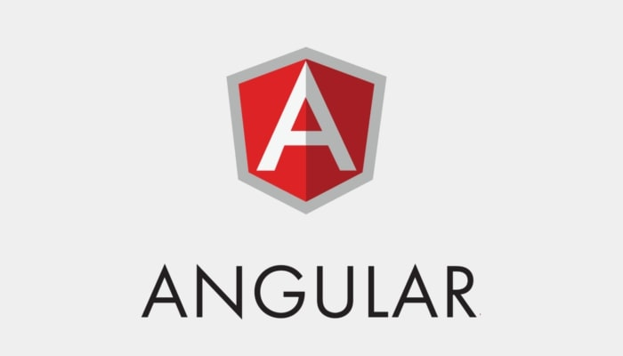
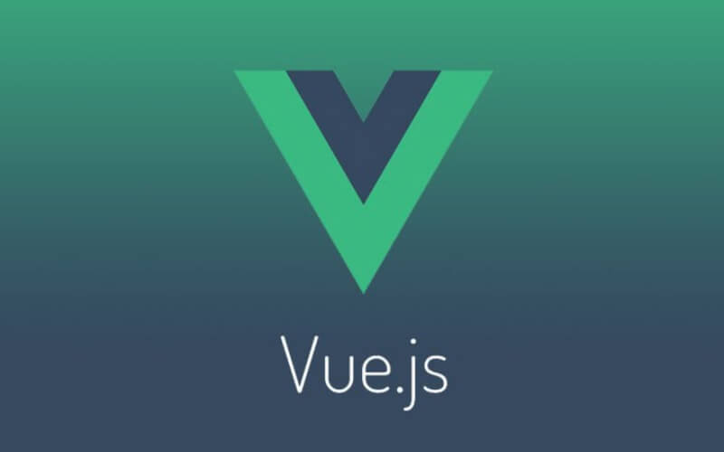
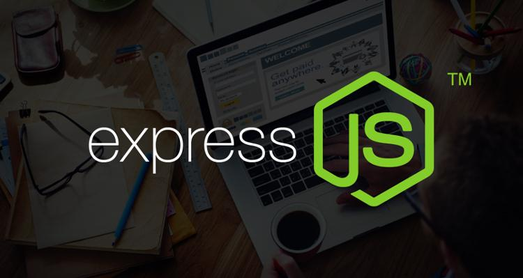

React, được phát triển bởi Facebook, là một thư viện JavaScript thường được xem như một framework frontend do nó cung cấp nhiều tính năng giúp phát triển giao diện người dùng (UI). React đặc biệt nổi tiếng với kiến trúc component-based (dựa trên các thành phần tái sử dụng), cho phép chia giao diện thành nhiều phần nhỏ, độc lập và dễ quản lý. Một điểm mạnh của React là cơ chế Virtual DOM: thay vì cập nhật trực tiếp DOM thật (thao tác tốn kém tài nguyên), nó tạo ra một bản sao ảo và chỉ đồng bộ những thay đổi cần thiết, giúp cải thiện hiệu suất. React cũng có một hệ sinh thái lớn với nhiều công cụ như React Router (quản lý điều hướng) và Redux (quản lý trạng thái), khiến nó trở thành lựa chọn hàng đầu cho nhiều ứng dụng web hiện đại.

Angular là một framework mạnh mẽ cho frontend, được phát triển và duy trì bởi Google. Khác với React, Angular là một giải pháp toàn diện với nhiều công cụ tích hợp sẵn, như routing, dependency injection (tiêm phụ thuộc), và quản lý dữ liệu hai chiều (two-way data binding). Angular sử dụng TypeScript, một phiên bản mở rộng của JavaScript, giúp mã nguồn an toàn và dễ bảo trì hơn. Với kiến trúc dựa trên module, Angular rất phù hợp cho các dự án lớn và phức tạp, nơi cần kiểm soát tốt quy trình phát triển. Ngoài ra, nó hỗ trợ xây dựng các ứng dụng đa nền tảng, chẳng hạn như Progressive Web Apps (PWA) và ứng dụng di động thông qua Ionic.

Vue.js, được tạo bởi Evan You, là một framework frontend nổi tiếng với sự nhẹ nhàng và dễ học. Vue tập trung vào việc xây dựng giao diện tương tác với cú pháp đơn giản và trực quan. Giống React, Vue cũng dựa trên cơ chế component, cho phép tái sử dụng mã hiệu quả. Một đặc điểm nổi bật khác của Vue là khả năng áp dụng linh hoạt: bạn có thể dùng nó cho từng phần nhỏ trong trang web hoặc mở rộng thành các ứng dụng lớn. Vue Router và Vuex là những công cụ phổ biến trong hệ sinh thái Vue, giúp quản lý điều hướng và trạng thái ứng dụng. Ngoài ra, Vue được đánh giá cao vì tài liệu rõ ràng và cộng đồng thân thiện, khiến nó trở thành lựa chọn lý tưởng cho cả người mới bắt đầu và các dự án phức tạp.

Spring Boot là một framework backend dựa trên Java, được xây dựng trên nền tảng của Spring Framework, nhằm đơn giản hóa quá trình phát triển ứng dụng Java. Spring Boot giúp các lập trình viên dễ dàng tạo ra các ứng dụng độc lập, có thể chạy ngay mà không cần cấu hình phức tạp. Một trong những điểm mạnh của Spring Boot là khả năng tự động cấu hình (auto-configuration), cho phép nó tự động thiết lập các thành phần cần thiết cho ứng dụng dựa trên các thư viện có sẵn trong classpath. Spring Boot hỗ trợ tích hợp với nhiều công nghệ và dịch vụ khác nhau như RESTful API, Spring Data JPA (để làm việc với cơ sở dữ liệu), và Spring Security (để bảo mật ứng dụng). Ngoài ra, nó cung cấp các công cụ như Spring Boot Starter giúp dễ dàng cấu hình và kết nối với các dịch vụ bên ngoài. Nhờ vào những tính năng mạnh mẽ và sự dễ sử dụng, Spring Boot trở thành lựa chọn phổ biến cho các ứng dụng web và dịch vụ microservices, giúp tăng tốc quy trình phát triển và cải thiện tính mở rộng của ứng dụng.

Express.js là một framework backend tối giản dành cho Node.js, cung cấp công cụ mạnh mẽ để xây dựng API và ứng dụng web nhanh chóng. Thiết kế của Express rất đơn giản và linh hoạt, cho phép các nhà phát triển mở rộng ứng dụng bằng cách sử dụng middleware—các phần mềm trung gian thực hiện xử lý trước hoặc sau các yêu cầu HTTP. Nhờ tính mở rộng tốt và cú pháp dễ hiểu, Express là lựa chọn phổ biến cho các ứng dụng RESTful và microservices. Ngoài ra, nó cũng là nền tảng cho nhiều framework phức tạp hơn, như Next.js (cho SSR - server-side rendering).

Django là một framework backend web mạnh mẽ được viết bằng Python, tập trung vào tốc độ phát triển và bảo mật. Django nổi bật với triết lý "batteries-included" (tích hợp sẵn mọi thứ cần thiết), cung cấp nhiều công cụ như ORM (Object-Relational Mapping) để làm việc với cơ sở dữ liệu, hệ thống xác thực người dùng, và giao diện quản trị mặc định. Django rất phù hợp cho các ứng dụng lớn và phức tạp cần quản lý nhiều dữ liệu và người dùng. Ngoài ra, nó cũng cung cấp nhiều công cụ bảo mật như CSRF protection và SQL injection protection, khiến nó được ưa chuộng cho các ứng dụng cần độ bảo mật cao, chẳng hạn như nền tảng thương mại điện tử và các hệ thống quản lý nội dung.
.NET Core là một framework backend phiên bản nhẹ, đa nền tảng của framework .NET - framework dựa trên C#, được phát triển bởi Microsoft để đáp ứng nhu cầu xây dựng ứng dụng hiện đại trên nhiều hệ điều hành khác nhau, bao gồm Windows, macOS và Linux. Sự ra đời của .NET Core đã mang lại nhiều lợi ích cho lập trình viên và các doanh nghiệp, đặc biệt trong bối cảnh ngày càng tăng của các ứng dụng web và dịch vụ đám mây. .NET Core có một cộng đồng lớn và đang phát triển, với rất nhiều tài liệu, ví dụ và thư viện mã nguồn mở sẵn có, giúp lập trình viên dễ dàng tìm kiếm hỗ trợ và học hỏi. Ngoài ra, .NET Core cũng được tối ưu hóa cho các môi trường đám mây, cho phép tích hợp dễ dàng với các dịch vụ Azure, giúp các ứng dụng hoạt động hiệu quả và có khả năng mở rộng. Cuối cùng, một trong những yếu tố quan trọng nhất của .NET Core là sự phát triển liên tục từ Microsoft, với các phiên bản mới được phát hành thường xuyên, mang lại nhiều tính năng mới và cải tiến hiệu suất, đảm bảo rằng .NET Core vẫn là một trong những lựa chọn hàng đầu cho việc phát triển ứng dụng hiện đại.